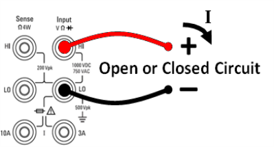

This section describes how to configure continuity tests from the front panel.
Step 1: Configure the test leads as shown.

Step 2: Press [Cont] on the front panel to open a menu where you can enable or disable the beeper for all functions that use the beeper (limits, probe hold, diode, continuity, and errors).
Continuity measurements behave as follows:
| ≤ 10 Ω | displays measured resistance and beeps (if beeper enabled) |
| 10 Ω to 1.2 kΩ | displays measured resistance without beeping |
| > 1.2 kΩ | displays OPEN with no beep |